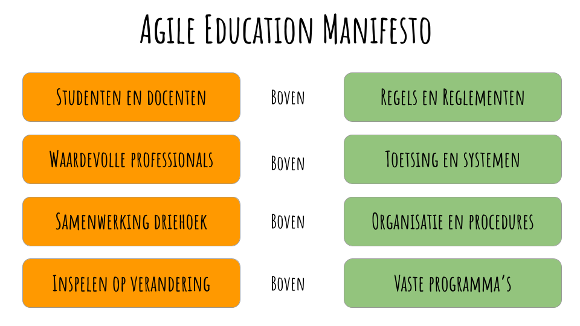
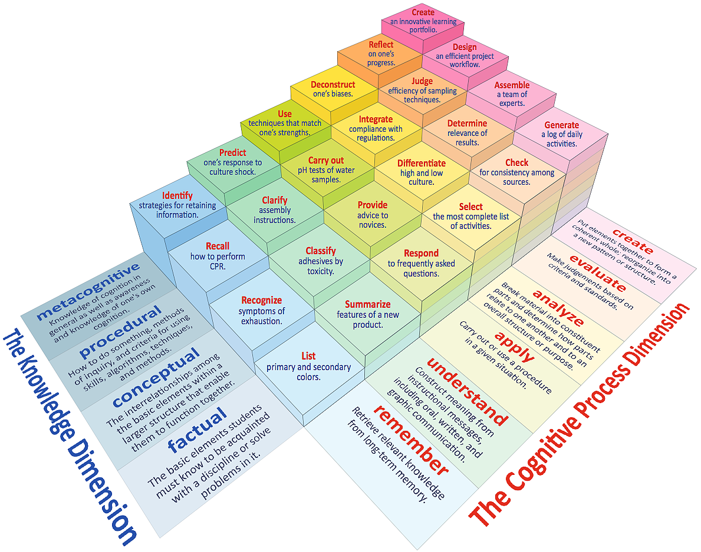
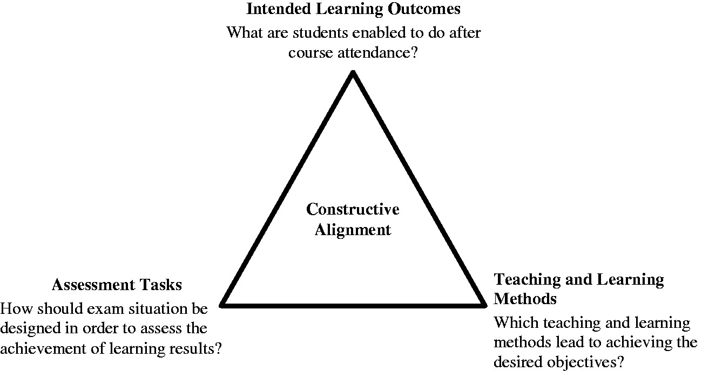
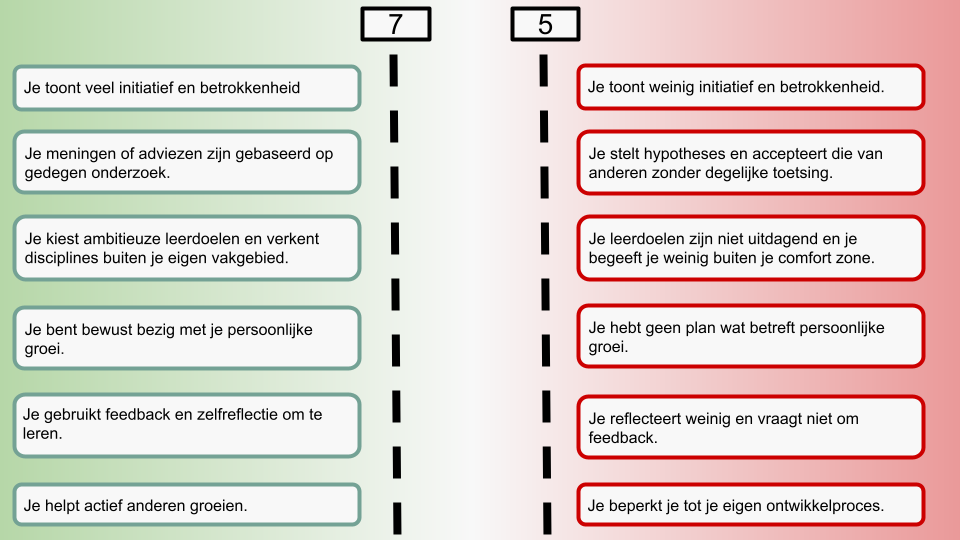
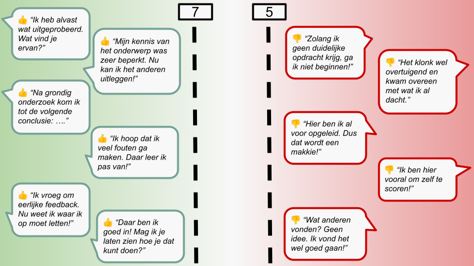
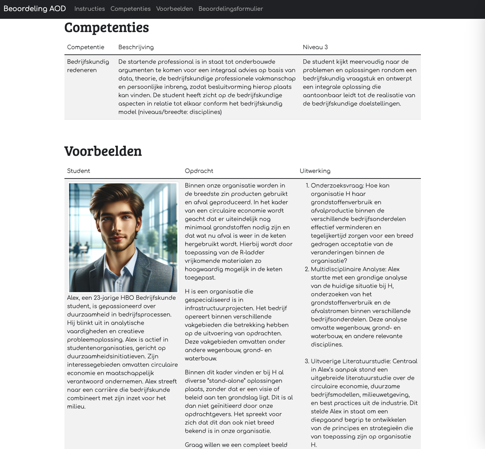

1 Doel
In de snel veranderende - VUCA - wereld van vandaag is de noodzaak voor hoger onderwijsinstellingen om wendbaar en flexibel te zijn belangrijker dan ooit. Het vermogen om snel te reageren op nieuwe technologieën, veranderende arbeidsmarkteisen en de voortdurende evolutie in leerbehoeften van studenten is cruciaal voor het leveren van relevant en effectief onderwijs. De principes van Agile, oorspronkelijk ontwikkeld voor softwareontwikkeling, bieden een krachtig raamwerk om deze uitdagingen aan te gaan. Door deze principes toe te passen, kunnen onderwijsinstellingen een omgeving creëren die bevorderlijk is voor continue verbetering, aanpassingsvermogen en studentgerichtheid.
Het Agile Onderwijs Manifesto verschuift de focus naar de kern van leren: de dynamiek tussen studenten en docenten prevaleert boven strikte regelgeving, en de expertise van vakprofessionals weegt zwaarder dan starre toetsingsprotocollen. Interdisciplinaire samenwerking tussen het onderwijsveld, de industrie en studenten krijgt voorrang op ingewikkelde organisatieprocessen. Essentieel is de flexibiliteit van het leerplan, waarbij het inspelen op veranderende omstandigheden belangrijker is dan het vasthouden aan gestandaardiseerde curricula. Dit manifest onderstreept het belang van aanpassingsvermogen en actieve betrokkenheid om het onderwijs toekomstbestendig te houden.

2 Missie / Visie
Doel 1: maatschappelijk betrokken wereldburgers
Onze studenten ervaren dat ze bij de HAN niet alleen kennis en praktische vaardigheden verwerven om de toekomst vorm te geven. Ze kunnen zich ook persoonlijk en maatschappelijk ontwikkelen en reflecteren op hoe zij het verschil maken.
Doel 3: flexibel onderwijs
De HAN is een dynamische onderwijsinstelling voor studenten, medewerkers en het werkveld. Iedere student krijgt de mogelijkheid een studieroute te kiezen die past bij zijn persoonlijke ambities en ontwikkeling.
Doel 4: duurzame verbindingen met partners
De HAN is 1 van de sleutelspelers in veerkrachtige regionale kennis-ecosystemen. Met als focus: slimme, schone en sociale oplossingen voor de regio. We verbinden onderwijs, praktijkgericht onderzoek en het werkveld met elkaar.
Tekst
Digitale Transformatie in Europa
Volgens het World Economic Forum zullen binnen 5 jaar 83 miljoen banen verdwijnen door AI en groene initiatieven. Het rapport, besproken met managing director Saadia Zahidi, wijst op een 'netto positief' effect met 69 miljoen nieuwe banen tegen 2027. Desondanks zullen vrouwen onevenredig getroffen worden door banenverstoring. Er is ook een groeiende trend van bedrijven die werknemers sneller omscholen om bij te blijven met de veranderende markt.
Het “Microsoft New Future of Work Report 2023” onderzoekt de integratie van Grote Taalmodellen (LLMs) in verschillende werkgebieden en benadrukt hun potentieel om productiviteit, creativiteit en samenwerking te verbeteren. Belangrijke gebieden zijn de verbetering van informatiewerk, kritisch denken, mens-AI-samenwerking, complexe en creatieve taken, domeinspecifieke toepassingen (zoals software-engineering, onderwijs, medische licenties), teamcollaboratie, kennisbeheer en de toekomstige implicaties voor werk en samenleving. Het rapport licht het belang toe van effectieve promptconstructie, de uitdaging van gepaste AI-afhankelijkheid en de rol van LLMs in het democratiseren van onderwijs en het bevorderen van meertalige capaciteiten. Er wordt een evenwichtige, mensgerichte benadering van AI-samenwerking voorgesteld, met inachtneming van zowel de voordelen als de uitdagingen van de integratie van LLMs in werkprocessen.
- Vraag
3 - Strategie
3.1 Eindniveaus HAN BK
Als student Bedrijfskunde krijg je te maken met een breed scala aan onderwerpen. Je leert over de nieuwste trends en praktijken in bedrijfsmanagement, marketing, financiën, human resources en meer. We richten ons niet alleen op theoretische kennis, maar ook op het ontwikkelen van praktische vaardigheden die essentieel zijn in de hedendaagse zakenwereld.
Ons programma is opgebouwd rond een reeks kerncompetenties die aansluiten bij de eisen van de moderne bedrijfswereld. Deze competenties omvatten:
Probleemanalyse en Diagnostiek: Je leert problemen te identificeren en analyseren in verschillende zakelijke contexten.
Ontwerpvaardigheden: We moedigen je aan om creatieve en innovatieve oplossingen te ontwerpen.
Veranderingsmanagement: Je ontwikkelt vaardigheden om veranderingen effectief te beheren en te leiden.
Evaluatievermogen: Je leert processen en resultaten kritisch te evalueren.
Onderzoeksvaardigheden: Onderzoek speelt een cruciale rol in het maken van onderbouwde zakelijke beslissingen.
Sociaal-communicatieve Vaardigheden: Deze zijn essentieel voor succesvol teamwork en netwerken.
Samenwerking en Netwerkvorming: Je leert de kunst van samenwerken en het opbouwen van professionele relaties.
Professionalisering: Wij stimuleren je om een levenslange leerhouding te ontwikkelen.
Waardengedreven Handelen: Ethiek en integriteit staan centraal in onze aanpak.
De opleiding is opgedeeld in drie niveaus van toenemende complexiteit en verantwoordelijkheid. Je start met het leggen van een solide basis (niveau 1), bouwt voort op gevorderde vaardigheden (niveau 2) en streeft uiteindelijk naar expertise (niveau 3). Elk niveau brengt je dichter bij het worden van een volwaardige bedrijfskundige professional.
Uiteindelijk leer je bedrijfskundig redeneren en handelen. Dit beschouwen we als een overkoepelende competentie waar meerdere onderliggende competenties samenkomen.
Overkoepelende competentie Bedrijfskunde HAN
| Bedrijfskundig redeneren | ||
|---|---|---|
| De startende professional is in staat tot onderbouwde argumenten te komen voor een integraal advies op basis van data, theorie, de bedrijfskundige professionele vakmanschap en persoonlijke inbreng, zodat besluitvorming hierop plaats kan vinden. De student heeft zicht op de bedrijfskundige aspecten in relatie tot elkaar conform het bedrijfskundig model (niveaus/breedte: disciplines). | ||
| Niveau 1 | Niveau 2 | Niveau 3 |
| De student herkent de relevante aspecten van een bedrijfskundig vraagstuk en kan op basis van betrouwbare argumenten een eenvoudig bedrijfskundig advies uitbrengen. | De student onderbouwt een bedrijfskundig advies door bedrijfskundige kennis en vaardigheid toe te passen in het continu proces van gegevensverzameling en analyse, gericht op de vragen en problemen van een organisatie en diens stakeholders. | De student kijkt meervoudig naar de problemen en oplossingen rondom een bedrijfskundig vraagstuk en ontwerpt een integrale oplossing die aantoonbaar leidt tot de realisatie van de bedrijfskundige doelstellingen. |
Emma Jansen - Niveau 1
Startende Bedrijfskundige
Project: Efficiëntieanalyse bij Klein Kledingbedrijf.
"Dit project hielp me inzien hoe cruciaal het is om elk aspect van een bedrijf te begrijpen, hoe klein ook!"

Lucas de Vries - Niveau 2
Gevorderde Bedrijfskundige
Project: Marktanalyse voor Tech Startup.
"De uitdaging om nieuwe markten te identificeren was zowel boeiend als leerzaam, en toonde het belang van data-analyse aan."

Sophia Rodriguez - Niveau 3
Expert Bedrijfskundige
Project: Strategisch Plan voor Duurzame Energie.
"Werken aan dit project heeft me niet alleen bedrijfskundige vaardigheden bijgebracht, maar ook hoe je een echte impact kunt maken op de wereld."
Bastiaan van Dijk - Niveau 1
Startende Studentondernemer
Project: Opzetten van een community app.
"Dit project leerde me de basis van het runnen van een bedrijf en het belang van klanttevredenheid."
Amirah Al-Hassan - Niveau 2
Gevorderde Studentondernemer
Project: Uitbreiding van een online kledingwinkel.
"De groei van mijn online onderneming liet me de complexiteit van e-commerce en klantsegmentatie zien."
Thomas Meijer - Niveau 3
Expert Studentondernemer
Project: Ontwikkelen van een social entreprise.
"Het bouwen en leiden van dit bedrijf heeft me geleerd hoe innovatie en duurzaamheid hand in hand kunnen gaan."
- Vraag
4 - Ontwerp / uitvoering
Tekst

Tekst
Constructive Alignment
Constructive Alignment is een krachtig principe voor onderwijsontwerp. Het helpt bij het ontwerpen van cursussen, leerplannen en het nemen van beslissingen over cursusactiviteiten en materialen. Bovendien kan het worden gebruikt om de relatie tussen de cursusactiviteiten en beoordeling uit te leggen. Dus bij de vraag: "komt dit in het examen?" kun je het antwoord koppelen aan het cursusprogramma.




Tekst
- Vraag
5 - Inspiratie
Tekst
5.1 Visie / Strategie / Waardecreatie
Open Strategy
Open strategy en open source hebben een nauwe relatie omdat ze beide zijn gebaseerd op de principes van openheid, samenwerking en transparantie. Open source-software maakt gebruik van open strategieën om bijdragen van de gemeenschap te stimuleren en te beheren, terwijl open strategieën kunnen worden toegepast op andere gebieden, zoals bedrijfsstrategie, om meer participatie en betrokkenheid mogelijk te maken.
5.2 Organisatie / Mensen / Informatie
The Only Business Metric That Matters
We willen allemaal geweldige ideeën, maar weinigen begrijpen echt hoe geweldige ideeën ontstaan. Innovatie is geen evenement, geen workshop, sprint of hackathon. Het is het resultaat van het beheersen van de ideeënstroom, een exercitie die al het andere dat je doet naar een hoger niveau tilt. Voortbouwend op de lessen uit Stanfords belangrijkste LaunchPad-acceleratorprogramma en van enkele van 's werelds meest innovatieve organisaties, onthullen Jeremy Utley en Perry Klebahn dat de sleutel tot creatie ideaflow is - de praktijk die creatieve output versterkt.